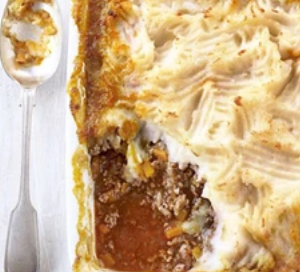

Shepherds Pie

Description
A classic family recipe
Ingredients
- 1 tbsp sunflower oil
- 1 large onion, chopped
- 2-3 medium carrots, chopped
- 500g pack lamb mince
- 2 tbsp tomato puree
- large splash Worcestershire sauce
- 500ml beef stock
- 900g potatoes, cut into chunks
- 85g butter
- 3 tbsp milk